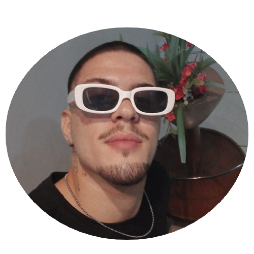

Perfil
Luis Felipe Claro Rocha
Cursando sistemas de informação - UFRRJ
Ex-atleta profissional de judo
Sobre mim:
Tenho 19 anos, sou carioca nascido em laranjeiras, mas atualmente moro no recreio.
Sempre tive certo fascínio pela área da tecnologia e programação, por isso
escolhi o curso de SI e atualmente estou no 2 periodo.
Faço judo a aproximadamente 14 anos, lutei profissionalmente e viajei para
representar a federação Carioca e a confederação Brasileira diversas vezes
contudo devido uma lesão ano passado, preferi me aposentar dos tatames pra
focar nos estudos.
Hobbys:
Malhar
Ler
Desenhar
Jogar no PC
Sair pra beber :)
CONTATO
tel:(21) 97971-9798 | e-mail:luisfelipeclarocha@gmail.com